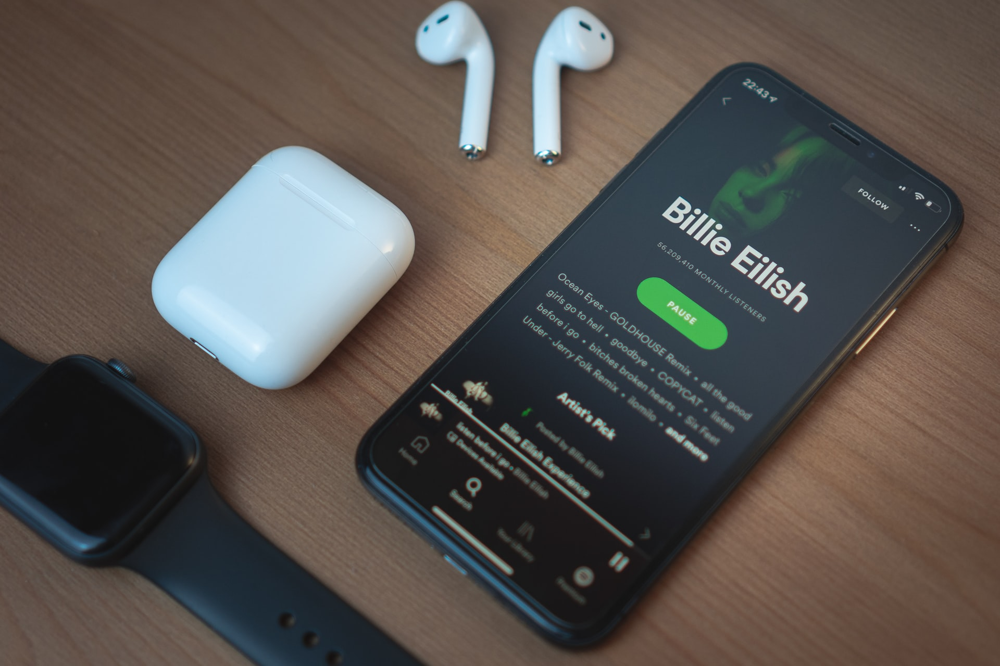

My Works
Qui anim quis aliqua dolor veniam in eiusmod amet irure ipsum mollit ipsum. Sit id proident veniam consectetur sint enim nostrud sint minim nostrud adipisicing. Enim aliqua sunt mollit incididunt. Ad ipsum pariatur magna veniam sit aliqua cupidatat aute do aliqua aliqua nulla. Nostrud nisi tempor eiusmod aliqua proident labore.
Projects

Spotify UX Case Study
A case study on the how Spotify is the no. 1 music and podacast app. What things are working and what might be some twerks that can make the UX better

Netflix UX Case Study
A case study on the how Spotify is the no. 1 music and podacast app. What things are working and what might be some twerks that can make the UX better

Instagram UX Case Study
A case study on the how Spotify is the no. 1 music and podacast app. What things are working and what might be some twerks that can make the UX better